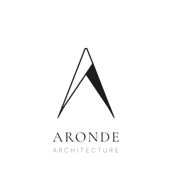
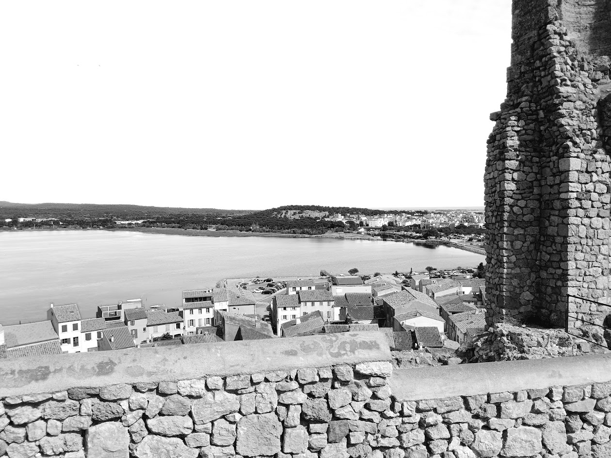

Architecte à Gruissan — ARONDE Architecture
Téléphone
Mail
Instagram

Construction · transformation · extension

Matière · climat · usages
Gruissan
![ARONDE Architecture]()